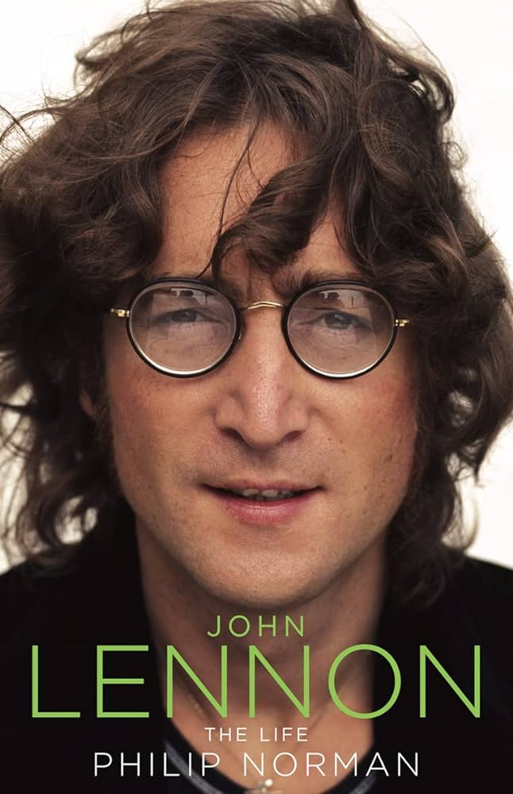
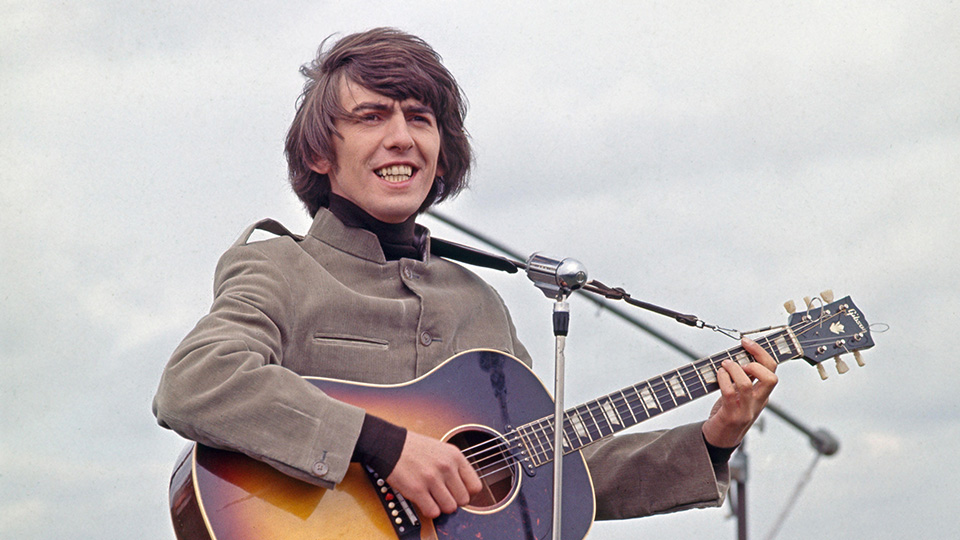
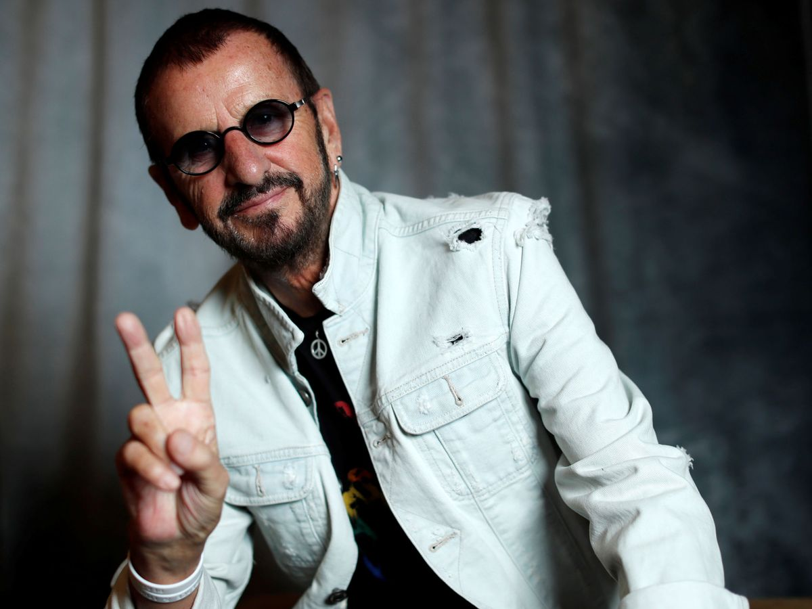
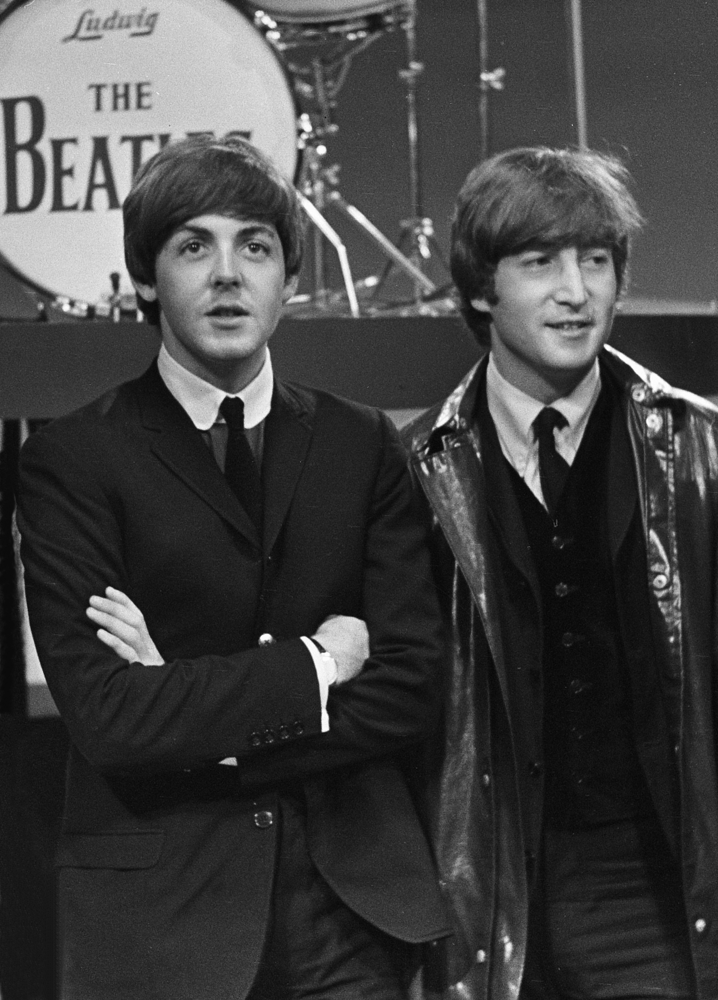

Miembros de la banda
Los miembros originales de la banda The Beatles, que se formó en Liverpool, Reino Unido, en 1960, fueron:
-

John Lennon: Cantante y guitarrista rítmico.
-

Paul McCartney: Cantante, bajista y guitarrista.
-

George Harrison: Guitarrista principal y cantante.
-

Ringo Starr (nombre real: Richard Starkey): Baterista y ocasionalmente cantante.
Estos cuatro músicos son conocidos como los miembros fundadores y más influyentes de The Beatles. Juntos, crearon algunas de las canciones más icónicas y populares en la historia de la música. La banda se disolvió oficialmente en 1970, y cada miembro continuó con exitosas carreras en solitario y proyectos musicales.
Linea del Tiempo
1957
John Lennon y Paul McCartney se conocen en una iglesia de Liverpool.
Este encuentro marca el inicio de la futura colaboración musical.
1960
La banda cambia su nombre a "The Beatles" y realiza una serie de
conciertos en Hamburgo, Alemania, para perfeccionar su sonido y habilidades en el escenario.
1962
George Martin, productor de EMI, firma un contrato con The Beatles y
la banda lanza su primer sencillo, "Love Me Do".
1963
The Beatles lanzan su primer álbum de estudio, "Please Please Me", que
incluye éxitos como "Twist and Shout" y "I Saw Her Standing There".
1964
El fenómeno de "Beatlemania" estalla en todo el mundo cuando la banda
realiza una histórica gira por Estados Unidos y aparece en "The Ed Sullivan Show".
1965
The Beatles lanzan "Rubber Soul", un álbum que marca un cambio en su
estilo musical hacia un sonido más experimental.
1967
La banda lanza "Sgt. Pepper's Lonely Hearts Club Band", un álbum que se
considera uno de los más influyentes en la historia de la música popular.
1969
The Beatles realizan su último concierto público en la azotea
de Apple Corps en Londres.
1970
La banda se separa oficialmente, y cada miembro sigue carreras en solitario.
Lanzan sus respectivos álbumes en solitario, como "McCartney" de Paul McCartney y
"All Things Must Pass" de George Harrison.
1980
Trágicamente, John Lennon es asesinado en Nueva York el 8 de diciembre.
1995
Los tres miembros sobrevivientes de The Beatles se reúnen para trabajar
en la canción "Free as a Bird", utilizando una grabación previamente no lanzada de John Lennon.
2000
Se lanza el álbum recopilatorio "1", que presenta todos los éxitos número
uno de The Beatles.
2010
Paul McCartney y Ringo Starr, los dos miembros sobrevivientes, actúan
juntos en el concierto benéfico "The Night That Changed America" para conmemorar el 50 aniversario
de la aparición de The Beatles en el programa de Ed Sullivan.

×